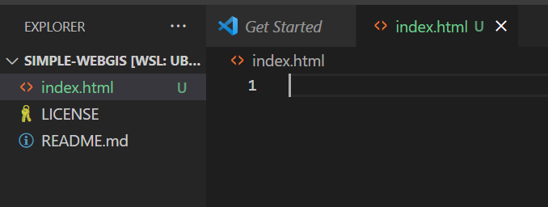
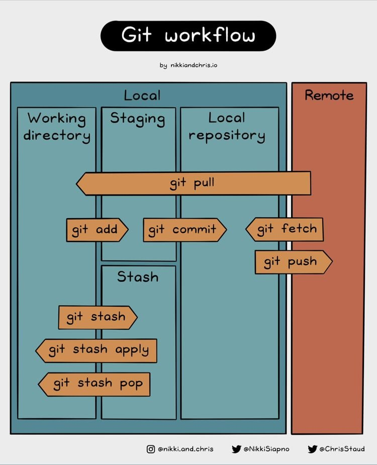
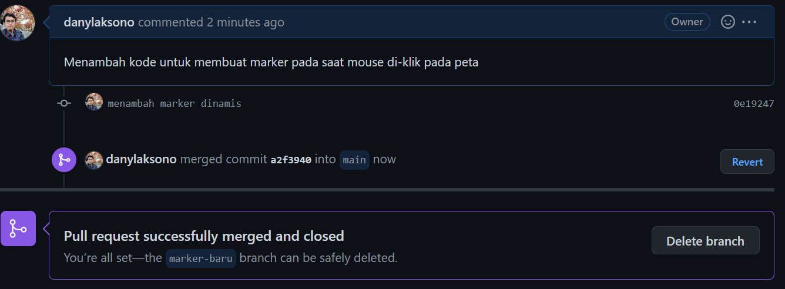
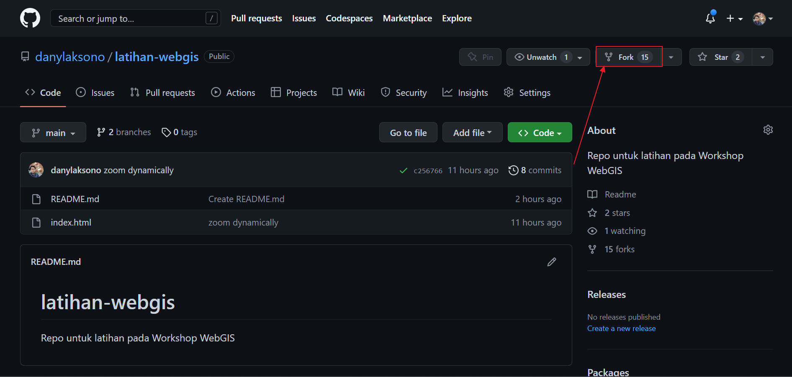
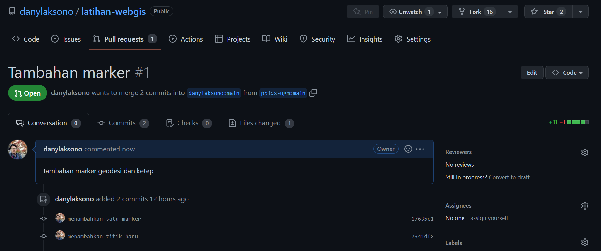
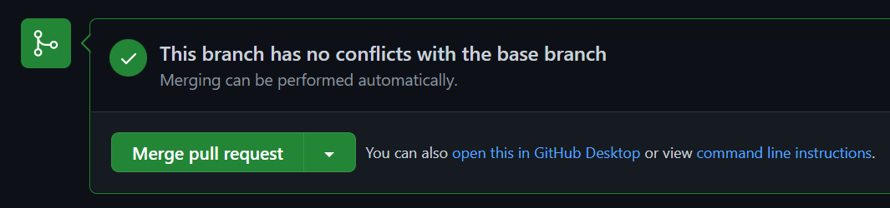

Git dan Github
Tentang Git
Git merupakan sistem Source Code Management (SCM) dan Version Control 1 yang bersifat bebas dan terbuka (free and open source). Git didesain untuk memudahkan manajemen kode dalam skala kecil hingga skala besar, sambil tetap menjaga kecepatan proses yang dibutuhkan. Pada git, berkas kode aplikasi disimpan dalam sebuah ‘repository’. Setiap repository pada sistem Git merupakan penyimpanan kode mandiri yang memiliki kemampuan pelacakan dan history (lihat penjelasan tentang version control di samping). Git juga memungkinkan pelacakan dari banyak kontributor sekaligus.
1 Version Control adalah aplikasi yang digunakan untuk merekam dan melacak tiap perubahan yang terjadi pada sebuah berkas dan siapa yang melakukan perubahan tersebut. Apabila Anda menggunakan Google Docs untuk mengedit sebuah berkas dokumen, maka ini adalah bentuk sederhana dari sebuah Version Control
Github merupakan layanan repository Git dengan berbagai fungsionalitasnya ditambah dengan fungsi-fungsi lain yang memperkaya manajemen kode pada Github. Karena kelengkapan fungsi dan sifatnya yang gratis inilah maka Github seringkali dipercaya untuk menyimpan kode dari berbagai perangkat lunak Open Source, dimana Github memungkinkan semua orang untuk turut berkontribusi pada suatu project.
Dengan demikian, dapat dikatakan bahwa Github adalah salah satu perangkat lunak yang menggunakan prinsip Git dalam manajemen kode perangkat lunak. Selain Github, ada juga perangkat lain seperti Gitlab dan Bitbucket. Pada modul ini kita akan menggunakan Github karena adopsinya yang demikian luas.
Salah satu fitur Github yang sangat menguntungkan dalam pembuatan halaman web adalah: Github dapat digunakan sebagai sebuah hosting gratis, dengan sebuah alamat domain yang juga gratis (namapengguna.github.io). Pada sub-bab ini kita akan membahas bagaimana membuat sebuah repository Github serta menggunakannya untuk menyimpan beberapa berkas sederhana. Lebih lanjut nanti pada modul ini, kita akan menggunakan Github untuk menyimpan dan mempublikasi aplikasi WebGIS hasil pekerjaan kita.
Banyak pertanyaan mungkin muncul ketika Anda mendengar bahwa fungsi dari sebuah Version Control System adalah untuk merekam perubahan pada sebuah dokumen. Bukankah apabila kita menggunakan penyimpanan seperti Google Drive atau Dropbox, fitur yang sama juga dapat kita jumpai?
Jawaban sederhana untuk pertanyaan tersebut adalah: Git lebih dari sekedar sistem untuk melacak perubahan pada berkas. Pernahkah Anda melakukan editing sebuah dokumen secara bersamaan dengan ratusan atau bahkan ribuan orang sekaligus? Bagaimana Anda memastikan bahwa editing yang dilakukan oleh orang tersebut valid dan layak digunakan pada dokumen Anda? Siapa yang bertanggung-jawab untuk melakukan editing pada bagian tertentu di dokumen Anda?
Git menyediakan fitur untuk memastikan editing kode dapat dilakukan secara kolaboratif oleh banyak kontributor sekaligus (Lihat contohnya pada repository QGIS di Gambar 1). Git memfasilitasi suatu alur version control system yang memastikan kode dapat dibaca dan dirubah oleh banyak orang sekaligus menjamin validitas kode tersebut. Sekali lagi, sebuah aplikasi terdiri dari banyak komponen. Sebuah aplikasi dalam skala menengah saja mungkin memiliki ratusan bahkan ribuan file berbeda. Kita memerlukan sebuah sistem untuk mengatur bagaimana editing dilakukan pada berkas-berkas tersebut sambil memastikan bahwa aplikasi tetap dapat berjalan seperti biasa. Di samping itu, Git juga dilengkapi dengan berbagai fungsi lain untuk project management, seperti issue reporting, milestone, dan lain sebagainya yang memang dikhususkan untuk pembangunan aplikasi.
Prinsip dan Cara Kerja Github
Bagian berikut akan menjelaskan secara naratif tentang bagaimana Github sebagai sebuah Version Control System bekerja untuk merekam perubahan pada kode dan memungkinkan kolaborasi antar developer untuk membangun sebuah perangkat lunak. Anda tidak harus memahami sub-bab ini untuk melanjutkan ke sub-bab berikutnya. Anggaplah bagian ini sebagai rujukan yang dapat Anda buka sewaktu-waktu apabila Anda belum memahami tentang cara kerja Github. Jika mau, Anda dapat langsung melompat ke bagian Praktek Menggunakan Github untuk memulai.
Kita akan gunakan ilustrasi berikut sebagai pengantar:

Ada 3 bagian utama dari gambar di atas, yaitu:
- Developer A. Anggap ini adalah Anda dan komputer Anda, tempat Anda mengembangkan aplikasi WebGIS ini
- Remote Repository. Repository yang tersimpan pada Github (di server Github). Remote repository ini dapat terdiri dari berbagai cabang (branch) yang merupakan rekaman untuk versi dokumen yang berbeda.
- Developer B. Rekan Anda yang membangun aplikasi WebGIS yang sama pada repository yang sama
Developer A dan Developer B bekerja pada komputer masing-masing. Remote repository merupakan tempat penyimpanan kode pada server Github yang dapat diakses pada alamat https://github.com/<nama pengguna>/<nama repository>. Gambar di atas menjelaskan beberapa perintah Github yang digunakan selama proses pembangunan aplikasi. Berikut adalah alur kerja Github berdasarkan gambar di atas:
- Anda membuat repository online pada Github. Ini adalah bagian
remote repositoryberwarna abu-abu pada gambar di atas - Anda melakukan
cloning, yaitu membuat salinan repository tersebut di komputer Anda. Proses cloning ini adalah garis berwarna hijau. Salinan hasil clone yang terdapat di komputer Anda disebut sebagai sebuahworking copy. Perintah yang digunakan untuk melakukan cloning adalahgit clone. - Pada
working copyinilah Anda melakukan perubahan kode: menambah atau menghapus baris, dan seterusnya. Perubahan ini hanya terjadi di komputer Anda dan sama sekali belum merubah kode yang tersimpan pada repository Github. - Untuk merekam perubahan pada kode yang terjadi di komputer Anda, Anda perlu untuk memberi tahu Git pada saat Anda ingin merekam perubahan tersebut. Perekaman ini akan membuat penyimpanan lokal sementara yang disebut dengan nama
staging area. Untuk menambahkan perubahan kode yang Anda lakukan pada staging area, digunakan perintahgit add. - Tahap final sebelum mendorong kode dari komputer Anda ke repository Github adalah membuat sebuah
commit. Commit berisi rekaman tentang apa saja yang berubah sejak commit terakhir Anda buat pada staging area. Dengan demikian, dapat dianggap bahwa sebuah commit adalah titik pemberhentian terakhir rekaman perubahan kode sebelum diunggah pada repository Github. Untuk membuat commit dari staging area, digunakan perintahgit commit - Hasil dari Commit adalah sebuah berkas yang berisi seluruh rekaman perubahan yang Anda lakukan pada kode Anda sejak commit sebelumnya dibuat, berikut dengan pesan (commit message) yang Anda tuliskan pada rekaman tersebut. Sekali lagi, hasil commit ini masih ada di komputer Anda dalam bentuk Local Repository. Untuk menunggah Local repository ke Repository Github, digunakan perintah
git push. - Hasil dari Git Push adalah sinkronisasi antara kode yang terdapat pada local repository dan repository pada Github.
Perlu dicatat bahwa proses no. 1 sampai no. 7 pada Gambar 2 di atas terjadi pada sebuah branch atau cabang dari repository di Github. Pemilik repository nantinya dapat menggabungkan berbagai branch yang berbeda menjadi sebuah repository utama (seringkali disebut sebagai main atau master) sebelum merilis aplikasi tersebut. Gambar 3 berikut memberikan ilustrasi proses tersebut:
Pada contoh di atas, Repository Github ‘WebGIS Geodesi’ dimiliki oleh Developer C sebagai Admin, dengan Developer A sebagai salah satu pemilik hak akses. Repository tersebut berada pada alamat https://github.com/developerc/webgisgeodesi. Developer A mengunggah update kode yang ditulisnya dari repository lokal ke repository Github ‘WebGIS Geodesi’ pada branch ‘layout’ dengan mengikuti proses sebelumnya (no. 1-7 di atas).
Developer A kemudian meminta agar bagian kode yang ditulisnya digabungkan dengan kode utama pada repository ‘main’. Permintaan penggabungan kode ini disebut dengan nama Pull Request. Selanjutnya, Developer C sebagai admin memeriksa kode yang ditulis oleh Developer A, kemudian setelah memastikan kesesuaian kode tersebut, Admin menggabungkan pull request tersebut ke Repository Utama di Github menggunakan Git Merge. Skenario penggabungan kode dengan cara semacam ini dapat kita sebut sebagai Skenario Pertama.
Bagaimana jika ada developer lain (misalnya Developer B), yang bukan merupakan admin dari repository tersebut namun ingin menyumbangkan kode buatannya? Bagaimana kalau Developer B ingin menambahkan sebuah peta pada halaman WebGIS Geodesi? Developer B tetap dapat melakukan hal-hal tersebut melalui mekanisme yang kita sebut saja sebagai Skenario Kedua. Kurang lebih seperti berikut:
Developer B membuat fork dari Repository Github ‘WebGIS Geodesi’ ke dalam akun miliknya, sehingga kini Developer B memiliki salinan repository WebGIS Geodesi pada akun githubnya sendiri pada alamat https://github.com/developerb/webgisgeodesi_2. Developer B dapat melakukan proses yang sama seperti Developer A pada repositorynya sendiri (langkah 1-7 di atas) pada branch ‘peta’ kemudian mengajukan sebuah Pull-Request antar-repository, dari Repository Github miliknya ke repository Github milik Developer C. Admin Repository asal kemudian dapat melakukan penggabungan Pull-request (seringkali disingkat sebagai ‘PR’) ke dalam kode utama di repository asal pada branch main.
Nah, sampai di sini mungkin akan muncul pertanyaan: bagaimana kalau Developer A telah lebih dulu mengajukan Pull-request yang diterima dalam repository asal, dalam keadaan Developer B belum selesai menulis kodenya? Konsekuensi untuk ini adalah kode yang berada di repository Developer B belum mengandung perubahan yang telah dibuat oleh Developer A, sehingga ketika nantinya Developer B membuat PR, kemungkinan akan terjadi ‘bentrok’ karena Developer A maupun Developer B merubah bagian kode yang sama.
Di sinilah pentingnya bagian kedua dari Gambar 2: Sebelum Developer B akan mengunggah kodenya dalam bentuk Git Push ke repositorynya sendiri, ia perlu mengunduh update apapun yang terjadi pada repository asal milik Developer C (dalam Github, repository asal ini disebut sebagai upstream). Developer B perlu menggunakan perintah Git Pull untuk keperluan ini. Dengan mengunduh status terakhir dari repository Upstream, Developer B dapat menyelesaikan semua konflik antara kode yang berada di repository lokal komputernya dengan repository upstream. Setelah konflik diselesaikan, barulah kemudian ia mengikuti langkah selanjutnya (Git Add - Git Commit - Git Push) ke repositorynya sendiri seperti yang disebutkan di atas. Terakhir, Developer B kemudian mengajukan Pull Request dari repository Github miliknya (disebut sebagai origin) ke repository asal sehingga Developer C dapat menggabungkannya ke kode utama.
Apa sebenarnya yang ‘direkam’ pada setiap commit?
Sebuah commit yang dihasilkan dari tiap proses git add - git commit - git push akan merekam setiap perubahan yang terjadi pada semua file di repository lokal. Contoh sebuah commit adalah seperti di bawah ini. Warna merah menunjukkan baris yang dihapus, sedangkan warna hijau menunjukkan penambahan baris kode baru. Pada contoh Gambar 4 di bawah terdapat 17 berkas yang dirubah, dengan total penambahan sejumlah 763 baris dan penghapusan kode sejumlah 418 baris.
Setiap commit memiliki ID yang terdiri dari 40 karakter (42f74812daff3f03798335cc4dd6fee2a9ac2459 untuk contoh di atas) yang merekam setiap perubahan pada versi tersebut. Mengapa sebuah Commit begitu penting? Commit ini adalah sebuah checkpoint. Anda dapat kembali ke versi commit manapun yang Anda inginkan dengan memanggil IDnya.
Terdengar complicated? Langkah-langkah tersebut di atas dirancang untuk memastikan proses penulisan kode hingga rilis aplikasi berjalan dengan lancar meskipun melibatkan rangkaian yang sangat kompleks dengan jumlah developer yang banyak. Faktanya, adanya Git dan khususnya Github selama satu dekade terakhir telah mendorong pertumbuhan perangkat lunak Open Source di seluruh dunia.
Ingat, Anda tidak harus memahami seluruh narasi di atas untuk melanjutkan pada sub-bab di bawah ini. Anda bisa kembali kapan saja pada sub-bab ini sebagai referensi.
Menggunakan Github untuk Version Control System
Pada bagian ini kita akan mempraktekkan kedua skenario yang disebutkan di atas: membuat sebuah repository pada akun Github kita sendiri dan mempraktekkan skenario kontribusi pada akun Github user lain. Sebelum menggunakan Github, tentu terlebih dahulu kita perlu membuat akun pada website Github.com. Selain itu, kita juga perlu melakukan instalasi Git pada sistem operasi yang kita gunakan di laptop atau komputer untuk memanggil perintah-perintah Git. Dalam hal ini, kita diuntungkan dengan penggunaan Git, karena Ubuntu WSL yang merupakah sebuah distro Linux telah terintegrasi dengan berbagai utilitas untuk keperluan pembangunan perangkat lunak, termasuk Git.
Pertama, Anda harus memiliki sebuah akun Github terlebih dahulu. Jika Anda belum memiliki akun Github sebelumnya, buka halaman https://github.com/signup untuk mendaftarkan akun baru. Masukkan email yang akan dihubungkan dengan akun Github dan ikuti petunjuk pendaftaran (Gambar 5).
Lakukan pengaturan yang diperlukan untuk akun Github Anda pada halaman https://github.com/settings/profile. Jangan lupa untuk memverifikasi pendaftaran melalui email yang masuk ke akun terdaftar. Anda mungkin tidak dapat menggunakan fitur-fitur Github apabila Anda belum melakukan verifikasi akun.
‘What’s in a name?’ Demikian kata Shakespeare. Anda bebas untuk menggunakan nama apapun untuk akun Github Anda. Meskipun demikian, ada baiknya Anda menggunakan nama akun yang cukup ringkas dan mudah dibaca.
Mengapa demikian? Nama akun Anda akan digunakan untuk membuat sebuah domain oleh Github (namaakun.github.io), sehingga Anda perlu mengikuti beberapa hal mendasar untuk penamaan url, seperti menghindari nama yang terlalu panjang, tidak menggunakan angka dan simbol, dan lain sebagainya. Keep it simple, smarty!
Bekerja dengan Repository Github (Skenario 1)
Setelah memiliki akun Github, kita akan mempraktekkan bagaimana membuat sebuah repository dan menambahkan sebuah berkas kode sederhana serta melacak perubahannya. Berikut adalah langkah-langkah yang perlu Anda ikuti:
Pada halaman Github Anda (
github.com/namaanda), klik tanda (+) pada ujung kanan atas, kemudian pilihNew repositorydari opsi yang muncul

Masukkan nama repository yang ingin Anda buat. Untuk contoh ini, gunakan
simple-webgis. Berikan deskripsi yang sesuai dan atur agar repository tersebut bersifat ‘public’.Pada bagian pengaturan selanjutnya, tambahkan file
Readmedan Atur lisensi 2 repository.Klik pada tombol
Create Repository. Maka Anda akan dibawa pada halaman repository tersebut. Biasanya repository ini memiliki alamathttps://github.com/namaanda/namarepository.
2 Lisensi ini mengatur hak-hak dan kewajiban Anda sebagai pemilik repository serta semua pengguna yang memanfaatkan kode yang Anda publikasi di repository tersebut. Lihat link berikut untuk membaca lebih lengkap mengenai lisensi Open Source
Halaman repository simple-webgis yang baru saja Anda buat mungkin terlihat seperti berikut:
simple-webgisBerikut adalah penjelasan untuk Gambar 6 di atas:
- Alamat URL untuk repository Anda. Apabila Anda mengatur repository ini dengan pengaturan
public, maka alamat ini akan dapat diakses oleh siapapun. - Pengaturan repository. Di menu inilah nantinya Anda akan mengatur mengenai batasan akses, nama repository, maupun menghapus repository jika diperlukan.
- Nama Branch. Branch atau ‘cabang’ digunakan untuk melacak versi repository pada suatu waktu tertentu. Pada contoh di atas, repository ini hanya memiliki satu buah branch, yaitu
main. Kita akan membuat branch baru pada latihan berikutnya di sub-bab ini. - Tombol Kode. Tombol ini digunakan untuk menampilkan menu untuk melakukan cloning pada repository ini.
- Riwayat commit. Bagian ini akan menunjukkan
Commit IDterakhir serta kapan commit tersebut dibuat. - Isi repository. Kode yang Anda tulis akan muncul di sini.
Sekarang setelah Anda memiliki sebuah repository, kita akan mempraktekkan dua buah kasus seperti berikut:
Mengatur repository pada satu branch utama (main)
Ikuti langkah-langkah berikut:
Buka konsol WSL Anda. Anda dapat memanggilnya melalui
Start Menudengan mengetikkan ‘Ubuntu’ atau ‘WSL’.Navigasi ke halaman profil Ubuntu Anda menggunakan perintah berikut:
cd ~Perintah tersebut akan memindahkan direktori aktif Anda (‘change directory’) ke direktori profil Anda pada WSL.
Buat sebuah folder baru dengan nama
latihandan masuklah ke direktori tersebut. Pada shell, ketikkan perintah berikut:mkdir latihan && cd latihanSaat ini, Anda berada pada folder latihan. Kita akan menggunakan folder ini untuk menempatkan beberapa project yang akan kita buat sepanjang latihan pada modul ini.
Kembali ke halaman repository Github Anda. Klik tombol
<> Code, kemudian klik tombol Copy () yang terdapat di samping alamat clonePada Konsol WSL Anda, ketikkan perintah berikut:
git clonekemudian ‘paste’ kode yang telah Anda copy dari repository Github sebelumnya (gunakan klik kanan mouse Anda atau
ctrl+v). Setelah alamat selesai dicopy, tekanEnter:Perintah yang baru saja Anda panggil adalah
git clone, yaitu proses untuk mengkloning repository dari Github menjadi sebuah working copy di komputer Anda.
Setelah perintah selesai, Anda akan mendapatkan sebuah repository lokal. Gunakan perintah
lsuntuk menampilkan isi dari folderlatihansekarang: Ingat bahwa Anda juga dapat menampilkan isi dari folder tersebut pada Windows Explorer. Folder tersebut akan terletak di direktori berikut pada Windows:Pindah ke folder
simple-webgishasil cloning, kemudian ketikkanlsuntuk melihat isinya: Perhatikan bahwa isi dari folder tersebut adalah isi yang sama dengan Repository Github yang Anda Cloning.Ketikkan perintah berikut untuk membuka Visual Studio Code (VSCode):
# jangan lupakan tanda titik setelah 'code' code .Codemerupakan perintah untuk membuka VSCode. Tanda titik setelah ‘code’ menunjukkan direktory yang sedang aktif, sehinggacode .berarti, “buka VSCode pada direktori ini”. Perintah di atas akan membuka sebuah jendela VSCode seperti berikut:
Pada jendela VSCode seperti gambar di atas kita dapat melihat isi dari repository simple-webgis. Sekarang kita akan coba menambahkan sebuah berkas baru pada repository tersebut, kemudian mengirimkan pembaruan ini ke repository Github melalui mekanisme Git Push.
Untuk itu, lakukan langkah-langkah berikut:
Buat sebuah file baru pada working space lokal menggunakan VSCode. Klik kanan pada panel Explorer VSCode, kemudian pilih New File
Berikan nama file tersebut
index.html. Isikan baris kode berikut pada file
index.html. Gunakan copy-paste. Anda tidak harus memahami kode ini sekarang. Kita akan membahas lebih detil mengenai Maplibre pada bab selanjutnya.
index.html
<!DOCTYPE html>
<html>
<head>
<meta charset="utf-8" />
<title>Peta dengan Marker</title>
<meta name="viewport" content="initial-scale=1,maximum-scale=1,user-scalable=no" />
<script src="https://unpkg.com/maplibre-gl@2.4.0/dist/maplibre-gl.js"></script>
<link href="https://unpkg.com/maplibre-gl@2.4.0/dist/maplibre-gl.css" rel="stylesheet" />
<style>
body { margin: 0; padding: 0; }
#map { position: absolute; top: 0; bottom: 0; width: 100%; }
</style>
</head>
<body>
<div id="map"></div>
<script>
var map = new maplibregl.Map({
container: 'map',
style: 'https://basemaps.cartocdn.com/gl/voyager-gl-style/style.json',
center: [112.56513, -6.98846],
zoom: 8
});
var marker = new maplibregl.Marker()
.setLngLat([112.56513, -6.98846])
.addTo(map);
</script>
</body>
</html>Jika kita buka file index.html tersebut dengan menggunakan browser, kita akan mendapatkan tampilan seperti berikut:
Pada titik ini, kita telah melakukan modifikasi berkas pada sebuah Working copy dari repository Github simple-webgis. Ingat bahwa kita belum merubah sedikitpun kode yang berada pada repository Github (online). Kita akan mengunggah perubahan tersebut dengan empat langkah berikut:
- PENTING: Sebelum mengunggah apapun ke repository Github, terlebih dahulu kita perlu memeriksa apakah sudah terjadi perubahan di repository tersebut (misalnya karena ada penggabungan Pull Request yang dilakukan oleh developer lain). Untuk itu, gunakan perintah berikut untuk mengambil (‘pull’) perubahan tersebut ke dalam working copy kita jika ada:
git pull
- Selanjutnya, kita akan menambahkan seluruh berkas yang ada di working copy kita ke dalam staging area. Panggil perintah berikut pada shell WSL:
git add --all Perintah tersebut akan menambahkan semua berkas pada working copy ke dalam staging area dan mencatat semua perubahan yang terjadi pada berkas tersebut sejak commit terakhir pada repository. Tidak ada output yang keluar dari perintah ini. Kita akan melihatnya nanti pada saat melakukan commit.
- Di bagian inilah kita mencatatkan commit pada kode tersebut. Anggaplah commit sebagai sebuah stempel yang menyatakan bahwa perubahan ini telah mendapatkan persetujuan kita untuk dikirim ke repository Github. Sebuah commit juga disertai dengan pesan (‘message’) yang berguna untuk mengidentifikasi isi dari commit tersebut. Lakukan commit dengan memanggil perintah berikut:
git commit -am "Menambahkan file index.html"Parameter setelah -am pada kode di atas adalah pesan commit. Pesan commit sangat penting untuk mengidentifikasi apa isi dari commit yang kita buat tersebut. Ingat bahwa suatu saat kita mungkin perlu untuk kembali ke titik commit ini, sehingga pesan commit yang jelas akan memudahkan kita untuk melacak perjalanan perubahan kode yang kita buat.
Pada konsol, dapat kita lihat bahwa Git mencatat perubahan pada kode kita serta bagian mana yang berubah. Inilah yang akan kita kirimkan pada repository online pada langkah berikutnya.
- Terakhir, kita akan ‘mendorong’ commit yang telah kita stempel ini ke dalam repository Github online. Gunakan perintah berikut:
git push origin mainApa itu origin dan apa itu main pada perintah di atas? Origin merujuk pada repository Github yang kita miliki, yaitu untuk contoh ini adalah https://github.com/<namaanda>/simple-webgis. Apabila kita melakukan update untuk berkontribusi pada repository milik orang lain, kita akan menggunakan istilah upstream. Adapun main adalah branch pada repository origin yang kita tuju. Latihan menggunakan branch yang berbeda akan kita lakukan pada bagian Menggunakan Percabangan Repository di bawah ini.
Setiap orang memiliki gaya masing-masing dalam melakukan commit: ada yang membuat commit untuk tiap perubahan sekecil apapun. Ada juga yang baru membuat sebuah commit setelah sebagian besar dari codenya selesai dibuat. Tidak ada aturan khusus untuk ini, tetapi gunakan panduan umum berikut: Jika perubahan tersebut penting, buatlah sebuah commit. Meskipun hanya satu-dua baris yang Anda rubah, tetapi apabila perubahan tersebut berpotensi untuk mengakibatkan aplikasi mengalami error, maka sebaiknya Anda membuat commit untuk itu.
Anggaplah staging area sebagai tempat persinggahan sementara dari update code yang kita buat. Kita dapat meneruskannya menjadi sebuah commit, atau kita juga dapat membatalkannya dan menarik perubahan tersebut dari commit. Gambar 7 menunjukkan ilustrasi untuk proses ini

Sekarang, buka repository Github Anda menggunakan browser. Tampilan pada Gambar 8 berikut akan menunjukkan bahwa kita telah berhasil melakukan update berkas index.html yang sebelumnya kita buat pada repository lokal di komputer kita:
Seluruh contoh di atas merupakan alur penggunaan Github yang mungkin cukup bagi Anda apabila Anda hanya membutuhkan Github sebagai sistem pelacak perubahan berkas. Boleh jadi Anda tidak memerlukan langkah-langkah penggunaan Github di poin selanjutnya. Akan tetapi, pemahaman mengenai bagaimana Github bekerja di sub-bab berikutnya akan sangat membantu ketika Anda nantinya menggunakan Github untuk berkolaborasi dalam sebuah proyek secara bersama-sama dengan developer lain.
Menggunakan percabangan repository
Pada bagian ini kita akan bekerja dengan repository yang sama seperti sebelumnya, yaitu simple-webgis. Perbedaannya adalah bahwa kali ini kita akan menggunakan branch dan membuat PR - Pull Request untuk melacak dan mengatur kode yang kita tulis.
Lakukan latihan berikut:
- Pada Shell WSL di direktory
simple-webgis, ketikkan perintah berikut:
git checkout -b marker-baru- Perintah sederhana di atas melakukan dua hal sekaligus: membuat sebuah branch baru dan berpindah ke branch tersebut. Kita dapat memeriksa branch yang sedang aktif saat ini dengan menggunakan perintah:
git branchSaat ini, terdapat dua buah branch pada repository lokal kita. Kita akan melakukan editing pada file index.html dan menggunakannya untuk melakukan update webGIS kita pada branch marker-baru.
- Buka file
index.htmlpada VSCode, kemudian tambahkan baris berikut setelah definisi marker pada baris ke-27. Kode ini berfungsi untuk menambahkan marker baru pada saat tombol mouse di-klik di atas peta:
index.html
...
// add new marker on click
map.on('click', function(e) {
var marker = new maplibregl.Marker()
.setLngLat(e.lngLat)
.addTo(map);
});
...Ingat bahwa saat ini kita sedang berada pada branch marker-baru? Kita dapat melihat branch yang sedang aktif melalui VSCode seperti pada gambar berikut:
- Selanjutnya, kita akan mengirimkan update tersebut pada repository Github. Gunakan perintah berikut secara berurutan:
# mengupdate repository lokal dari repository github (branch 'main')
git pull origin main
# menambahkan semua file ke dalam staging area
git add --all
# membuat commit baru
git commit -am "menambah marker dinamis"
Pada perintah di atas, kita memberikan tambahan origin main pada perintah git pull. Mengapa demikian? Jawabannya adalah karena saat ini kita sedang berada pada branch marker-baru. Branch ini belum ada di repository Github, karena kita baru saja membuatnya pada komputer lokal kita. Karenanya, kita memeriksa update yang ada pada branch main di repository Github.
- Langkah selanjutnya, seperti sebelumnya, adalah mengunggah commit ini ke repository Github. Untuk itu kita gunakan perintah berikut:
git push origin marker-baruPerhatikan bahwa kita menggunakan branch marker-baru yang kita update ke repository Github. Pesan commit pada screenshot di atas menunjukkan adanya branch baru (* [new branch]) yang dibuat pada repository Github.
- Apabila kita mengunjungi halaman repository Github kita, kita akan melihat adanya branch baru tersebut:
- Pada halaman repository Github, kita juga dapat melihat pesan pemberitahuan bahwa kita baru saja melakukan commit pada sebuah branch, dan tombol untuk membuat sebuah Pull Request seperti berikut:
- Klik pada tombol
Compare & Pull Requesttersebut. Halaman untuk membuat sebuah Pull Request baru akan muncul seperti berikut:
Pada halaman ini, perhatikan bagian berikut:
Ingat penjelasan mengenai merge pada Gambar 3? Kita ingin menggabungkan (pull-request) update yang kita lakukan pada branch marker-baru ke branch main. Isi dari kedua branch ini sebenarnya sama (kita pastikan dengan menggunakan git pull origin main tadi), kecuali penambahan yang kita lakukan pada bagian marker. Arah panah pada gambar di atas mengindikasikan arah merging yang ingin kita lakukan. Tanda hijau menunjukkan bahwa tidak ada konflik yang terjadi apabila kedua branch tersebut disatukan.
- Klik pada tombol
Create Pull Request. Maka kita akan dibawa pada halaman untuk melakukan penggabungan (merge):
Klik tombol Merge Pull Request, kemudian Confirm Merge. Maka tambahan kode dari branch marker-baru akan digabungkan dengan kode yang sebelumnya ada di branch main.
- Setelah merging berhasil, kita akan mendapatkan pesan bahwa Pull Request (PR) tersebut telah selesai digabungkan dan telah ditutup: 
Kita dapat menghapus branch marker-baru apabila kita tidak memerlukannya lagi. Untuk saat ini, biarkan saja branch tersebut.
- Kita dapat melihat isi dari commit terbaru kita pada halaman utama untuk memastikan bahwa tambahan kode yang kita buat telah digabungkan oleh Github.
Klik pada ID commit seperti pada gambar. Tampilan detil dari commit tersebut akan muncul:
Sekali lagi, ingat bahwa sebuah commit adalah titik checkpoint. Kita dapat kembali lagi pada kondisi commit ini apabila kelak kita mengalami masalah atau bug dengan kode. Untuk itu, commit sangat berperan mengatur bagaimana status aplikasi yang kita kembangkan.
Mengapa perlu menggunakan branch? Bukankah kita juga dapat melakukan hal yang sama cukup dengan bekerja pada sebuah branch main branch saja?
Branch dapat kita gunakan, misalnya, pada saat kita melakukan eksperimen pada aplikasi yang sedang kita kembangkan. Sebagai contoh, kita dapat menggunakan branch untuk melacak tiap fitur baru. Kita dapat menggabungkan branch tersebut pada branch rilis (misalnya branch main) hanya ketika kita telah benar-benar yakin bahwa fitur yang kita kembangkan pada branch tersebut siap untuk diproduksi. Branch juga memungkinkan banyak developer berkontribusi bersama-sama pada sebuah aplikasi dengan mengembangkan fitur untuk masing-masing branch. Penjelasan lebih detil terkait dengan branching dapat dilihat pada link berikut.

Berkontribusi pada Repository Lain (Skenario 2)
Metode branching seperti pada kasus di atas memerlukan akses sebagai owner atau administrator dari repository tersebut. Dengan demikian, tidak semua orang dapat melakukan branching pada sebuah repository yang bukan miliknya. Namun bagaimana dengan perangkat lunak Open Source yang memungkinkan semua orang untuk dapat berkontribusi? Apakah setiap kontributor harus menjadi admin terlebih dahulu?
Jawabannya tentu tidak harus. Sebagai contoh, perhatikan halaman Pull Request pada Repository Github QGIS berikut:
Nama-nama yang ditandai berwarna merah pada Gambar 9 di atas adalah para pembuat PR untuk menambahkan fitur baru atau menyelesaikan bug pada QGIS. Sekarang bandingkan nama-nama tersebut dengan para member yang memiliki akses admin pada repository QGIS. Perhatikan bahwa tidak semua pull-request tersebut dibuat oleh para pengguna github pada daftar member tersebut.
Lantas bagaimana kita dapat berkontribusi pada perangkat lunak Open Source seperti QGIS ini tanpa menjadi seorang admin di repository tersebut? Kita dapat menggunakan metode forking yang akan kita praktekkan di sub-bab berikut. Metode forking memungkinkan semua orang untuk turut berkontribusi dan menyumbangkan ide atau fitur baru pada QGIS. Meskipun demikian, tidak semua permintaan PR (Pull Request) akan digabungkan begitu saja pada repository utama QGIS. Ingat bahwa hanya admin yang dapat melakukan merging. Dengan demikian, tiap Pull-request yang dibuat oleh para kontributor akan dievaluasi dan diuji oleh para admin sebelum resmi digabungkan pada branch rilis QGIS. Hal ini membuat manajemen rilis dan pengembangan fitur dapat berjalan secara lebih terkontrol serta terarah tanpa kehilangan esensi dari pengembangan perangkat lunak yang bersifat bebas dan terbuka.
Melakukan ‘Forking’
Pada latihan berikut, kita akan membuat skenario kontribusi pada sebuah repository yang berada pada alamat https://github.com/danylaksono/latihan-webgis. Anda diminta untuk menambahkan titik pada daftar marker yang berada pada file index.html di repository tersebut. Ikuti langkah-langkah berikut:
Buka halaman
https://github.com/danylaksono/latihan-webgis, kemudian klik tombolForkpada bagian kanan atas halaman Akan muncul halaman untuk membuat sebuah fork baru. Klik pada tombol
Create Forkuntuk membuat fork repository ini pada akun Anda. Pada contoh ini digunakan akunppids-ugm.Akan muncul repository baru pada halaman Anda yang merupakan salinan dari repository
github.danylaksono/latihan-webgis.Buka Konsol WSL Anda dan pindahkan direktori aktif ke folder
latihan.Lakukan cloning repository
latihan-webgispada Github Anda sebagaimana pada langkah sebelumnya. Perhatikan bahwa Anda melakukan cloning dari repository Github Anda sendiri (github.com/namaanda), bukan repository yang terletak padagithub.com/danylaksono. Perintah untuk melakukan cloning adalah seperti berikut (sesuaikan username dengan akun Anda):
git clone https://github.com/<namaakunanda>/latihan-webgis
- Pindahlah ke folder
latihan-webgis. Buka VSCode pada folder ini.
# Pindah ke folder latihan-webgis
cd latihan-webgis
# jangan lupakan tanda titik setelah code
code .Sampai tahap ini, Anda juga dapat membuat sebuah branch baru dan melacak perubahan yang terjadi seperti pada latihan di contoh sebelumnya. Repository hasil fork yang Anda buat adalah milik Anda. Anda bebas untuk memodifikasi, membuat branch baru, menambahkan admin, dan seterusnya, tanpa merubah apapun pada repository asal.
Sebagai catatan, mulai saat ini kita akan sebut repository Github latihan-webgis milik Anda sebagai repository origin, sedangkan repository latihan-webgis pada github.com/danylaksono sebagai repository upstream. Kita akan melihat penggunaannya setelah ini.
Setelah memiliki sebuah repository lokal dan repository Github (origin), kita akan melakukan modifikasi pada kode ini untuk mensimulasikan skenario kontribusi perangkat lunak open source.
Pada VSCode working copy untuk repository
latihan-webgis, buka berkasindex.html:Pada bagian script di dokumen HTML tersebut, Anda akan menemukan baris deklarasi variabel
markersseperti berikut:
// Daftar Titik. Anda bisa menambahkan marker baru di sini
var markers = [
{
"lat": -6.954619,
"lng": 112.49871,
"keterangan": "MIM 03 Doudo"
},
{
"lat": -6.98846,
"lng": 112.56513,
"keterangan": "SMP N 1 Sidayu"
},
{
"lat": -7.16812,
"lng": 112.65273,
"keterangan": "SMAN 1 Gresik"
},
];- Lakukan editing pada daftar marker tersebut. Tambahkan sebuah titik marker lagi pada variabel tersebut sehingga menjadi seperti berikut:
// Daftar Titik. Anda bisa menambahkan marker baru di sini
var markers = [
{
"lat": -6.954619,
"lng": 112.49871,
"keterangan": "MIM 03 Doudo"
},
{
"lat": -6.98846,
"lng": 112.56513,
"keterangan": "SMP N 1 Sidayu"
},
{
"lat": -7.16812,
"lng": 112.65273,
"keterangan": "SMAN 1 Gresik"
},
// tambahan titik baru. Sesuaikan dengan koordinat dan keterangan Anda sendiri
{
"lat": -7.76374,
"lng": 110.372936,
"keterangan": "Teknik Geodesi UGM"
},
];- Buat sebuah commit dan lakukan push untuk perubahan ini pada repository Github
latihan-webgisAnda. Jika Anda lupa, perintah yang digunakan adalah sebagai berikut :
# memastikan update dari repository origin
git pull origin main
# menambahkan semua file ke dalam staging area
git add --all
# membuat commit
git commit -am "menambahkan satu marker"
# melakukan push commit ke repository origin
git push origin mainPastikan bahwa Anda melakukan push pada repository yang sesuai, yaitu repository dengan nama akun Anda.
Dengan demikian, Anda telah berhasil melakukan forking dan membuat replika dari repository github.com/danylaksono/latihan-webgis dan memodifikasi kodenya untuk keperluan Anda sendiri. Anda dapat mendistribusikan repository ini sebagai hasil kerja Anda (tentunya dengan memperhatikan lisensi pada repository awal). Namun, bagaimana kalau Anda ingin menyumbangkan kode Anda pada repository github.com/danylaksono/latihan-webgis? Bagian berikutnya akan membahas mengenai hal ini.
Membuat Pull-Request Antar Fork
Skenario kita pada bagian ini adalah bahwa Anda ingin berkontribusi pada repository Upstream (github.com/danylaksono/latihan-webgis) sesuai dengan kode yang telah Anda buat pada repository Anda sendiri.
Untuk itu, lakukan latihan berikut:
Sebelum melanjutkan latihan, terlebih dahulu kita akan membahas mengenai apa itu remote pada sebuah repository Github. Remote adalah alamat repository Github yang digunakan sebagai acuan pada saat melakukan pull dan push. Dengan kata lain, remote merupakan penguhubung antara repository lokal di komputer kita dengan repository Github yang menjadi sumber kode tersebut.
- Pada konsol WSL, pastikan bahwa kita berada pada direktory
latihan-webgisyang telah kita clone sebelumnya. Ketikkan perintah berikut:
git remote -vPada gambar di atas, origin merupakan nama dari remote tersebut, sedangkan https://github.com/ppids-ugm/latihan-webgis adalah alamat remote. Perhatikan bahwa remote inilah yang digunakan pada saat kita melakukan operasi git push origin main, sesuai dengan indikator di akhir alamat tersebut yang menunjukkan hak untuk melakukan fetch atau push.
Gambar di bawah ini merupakan modifikasi dari Gambar 3 untuk menunjukkan bagian-bagian repository Origin dan Upstream. Sekarang kita tahu bahwa kita dapat melakukan git pull dan git push apda repository origin, karena kita memiliki alamat remote yang terdaftar pada repository tersebut.
Bagaimana kita dapat melakukan hal yang sama untuk repository asal, agar kita dapat melakukan pengecekan (misalnya dengan git pull) sebelum menambahkan kode baru?
Ikuti langkah-langkah berikut:
- Terlebih dahulu, kita perlu menambahkan alamat remote baru pada repository lokal kita, yaitu alamat remote
upstream. Gunakan perintah berikut pada shell WSL:
git remote add upstream https://github.com/danylaksono/latihan-webgis.git- Ulangi perintah berikut untuk melihat daftar alamat
remote:
git remote -vSaat ini kita telah memiliki dua buah alamat remote: origin dan upstream. Meskipun demikian, kita tidak dapat melakukan git push upstream main, mengingat kita tidak memiliki otorisasi untuk melakukan demikian kecuali kita merupakan admin untuk repository danylaksono/latihan-webgis. Lantas mengapa kita menambahkan alamat upstream ini? Bayangkan apabila repository upstream tersebut mengalami perubahan, misalnya, penambahan kode oleh developer lain. Kita dapat menggunakan remote upstream untuk memastikan bahwa kode pada repository kita memiliki kondisi yang sama dengan repository origin. Untuk itu, kita perlu melakukan git pull pada repository upstream untuk menjamin agar tidak terjadi konflik dari kode yang kita unggah untuk Pull request nantinya.
- Lakukan pembaruan (
git pull) dari repository upstream dengan menggunakan perintah berikut:
git pull upstream main Perintah di atas bermakna: “Lakukan git pull pada branch main di repository upstream”.
- Buat modifikasi pada file yang berada di repository kita, misalnya dengan menambahkan titik lain pada file
index.htmlseperti berikut:
var markers = [
{
"lat": -6.954619,
"lng": 112.49871,
"keterangan": "MIM 03 Doudo"
},
{
"lat": -6.98846,
"lng": 112.56513,
"keterangan": "SMP N 1 Sidayu"
},
{
"lat": -7.16812,
"lng": 112.65273,
"keterangan": "SMAN 1 Gresik"
},
// tambahan titik baru. Sesuaikan dengan koordinat dan keterangan Anda sendiri
{
"lat": -7.76374,
"lng": 110.372936,
"keterangan": "Teknik Geodesi UGM"
},
{
"lat": -7.495063,
"lng": 110.381643,
"keterangan": "Bukit Ketep"
},
];- Unggah modifikasi ini dengan menggunakan
git pushpada repository Anda (origin):
git add --all
git commit -am "menambahkan titik baru"
git push origin mainSekali lagi perhatikan bahwa kita melakukan update pada repository Github origin yang kita miliki.
Kita akan membuat sebuah Pull Request pada repository Upstream. Prosedurnya hampir sama seperti sebelumnya. Buka halaman
https://github.com/danylaksono/latihan-webgis, kemudian klik menuPull Request:Pada halaman Pull Requests, klik pada tombol
New pull request:
Klik pada tulisan
Compare accross forksPilih branch dan repository asal: namaanda/latihan-webgis (main) serta branch dan repository tujuan: danylaksono/latihan-webgis (main)
Setelahnya Anda akan dapat melihat perubahan dari repository Anda yang ingin digabungkan dengan repository danylaksono/latihan-webgis. Klik pada tombol untuk mengajukan permohonan penggabungan tersebut.
Pastikan bahwa merging dapat dilakukan tanpa konflik. Isikan Judul PR dan keterangan, kemudian klik
Create Pull RequestPull request telah berhasil dibuat. 
Sekarang, apabila Anda memeriksa kode pada danylaksono/latihan-webgis, apakah Anda akan melihat kode yang Anda usulkan? Belum tentu. Admin dari repository danylaksono/latihan-webgis akan memeriksa PR yang Anda buat serta memastikan tidak ada kesalahan yang muncul sebagai akibat dari penggabungan tersebut. Apabila admin merasa bahwa kode yang Anda tulis cukup baik dan memenuhi syarat, maka Admin akan menerima pull-request tersebut (bagian ini hanya dapat dilakukan oleh admin): 
Setelahnya, barulah Anda akan dapat melihat kode Anda telah digabungkan pada repository danylaksono/latihan-webgis:
Selamat! Anda telah menyelesaikan latihan tentang Github. Hasil Pull Request yang Anda buat pada latihan ini akan diperiksa oleh Admin dan digabungkan ke dalam kode utama. Apabila Pull request Anda diterima oleh admin, Anda akan dapat melihat updatenya secara otomatis pada alamat berikut: https://danylaksono.com/latihan-webgis
Bagaimana mungkin kode tersebut dapat langsung dipublikasi secara otomatis menjadi sebuah website? Sub-bab selanjutnya akan membahas mengenai hal ini.
Publikasi Halaman Web pada Github
Github menyediakan layanan domain dan hosting gratis untuk sebuah website static yang disebut dengan nama Github Pages. Ini berarti jika Anda menyimpan berkas-berkas website statik (sebuah file index.html seperti contoh di atas, misalnya) maka repository tempat Anda menyimpan berkas tersebut dapat Anda publikasikan menjadi sebuah halaman yang dapat diakses dari internet.
Setiap pengguna Github akan mendapatkan sebuah domain gratis: https://<namapengguna>.github.io. Domain ini mengambil berkas dari repository yang memiliki nama <namapengguna>.github.io. Ini berarti, apabila Anda membuat sebuah repository dengan nama tersebut dan menempatkan sebuah file index.html di dalamnya, maka isi dari file index.html ini akan dapat diakses dari alamat https://<namapengguna>.github.io. Selain itu, seluruh repository lain pada akun Github tersebut juga dapat diakses sebagai sebuah path. Sebagai contoh, repository dengan nama latihan-webgis akan dapat diakses dari alamat https://<namapengguna>.github.io/latihan-webgis. Menarik, bukan?
Publikasi halaman utama
Kita akan mulai dengan mempraktekkan bagaimana mengaktifkan domain <namapengguna>.github.io pada akun Anda. Ikuti langkah berikut:
- Buat sebuah repository baru. Repository ini harus memiliki nama
<namapengguna>.github.io(lihat contoh di bawah). Apabila terdapat perbedaan antara nama pengguna dan bagian awal dari nama repository ini, maka website tersebut tidak akan dapat diakses dan domain ini tidak dapat digunakan.
Bagaimana kalau Anda ingin menggunakan nama domain lain, misalnya .github.io, maka domain tersebut tidak akan dapat diakses. Github hanya memberikan satu buah domain yang sesuai dengan nama pengguna Anda. Inilah mengapa pemilihan nama pengguna Github di awal cukup penting. Nama ini sekaligus juga sebagai sebuah alamat domain.
Apabila Anda tetap ingin menggunakan nama domain yang berbeda dengan nama pengguna Anda, maka Anda dapat membuat sebuah organization dengan nama yang Anda pilih. Sebuah organization dapat memiliki satu nama domain (misalnya seperti ppids-ugm.github.io) di atas. Anda dapat membuat beberapa organisasi sekaligus, meskipun mungkin Anda perlu meluangkan waktu ekstra untuk mengatur organisasi yang berbeda.
Seperti sebelumnya, tambahkan file README pada repository ini. Pilih lisensi, kemudian klik pada
Create Repository.Setelah halaman repository selesai dibuat, lakukan cloning pada repository ini di folder
latihan. Berikut adalah contoh perintah untuk melakukan hal tersebut:Masuk pada direktori hasil cloning (
<namapengguna>.github.io). Buka VSCode pada direktori ini. Selanjutnya, tambahkan sebuah file baru pada repository ini dengan namaindex.html.Isikan baris kode berikut pada file
index.html:
index.html
<html>
<head>
<title>Landing Page</title>
<style>
body {
background-image: radial-gradient(circle at center, rgba(0, 0, 0, 0) 0%, rgba(0, 0, 0, 0.5) 100%), url('https://images.pexels.com/photos/460621/pexels-photo-460621.jpeg');
background-attachment: fixed;
background-position: center;
background-repeat: no-repeat;
background-size: cover;
}
.container {
display: flex;
flex-direction: column;
align-items: center;
justify-content: center;
height: 100%;
}
.title {
text-align: center;
font-size: 48px;
font-weight: bold;
color: white;
text-shadow: 2px 2px 20px #000000;
}
.subtitle {
text-align: center;
font-size: 24px;
color: white;
text-shadow: 2px 2px 4px #000000;
}
</style>
</head>
<body>
<div class="container">
<div class="title">Github Pages Landing</div>
<div class="subtitle">Thank you for visiting</div>
</div>
</body>
</html>Simpan file tersebut dan lakukan push ke repository Github:
Buka alamat
https://<namapengguna>.github.iodi browser Anda:
Selamat! Anda telah berhasil mempublikasikan sebuah website. Sub-bab berikutnya akan membahas lebih jauh fitur dari Github Pages.
Publikasi repository sebagai path
Kita sekarang memiliki sebuah domain, dan kita dapat mempublikasikan sebuah website statik pada alamat tersebut. Tetapi bagaimana jika kita ingin mempublikasi repository lain pada akun Github kita? Kalau Anda masih ingat, sebelumnya kita juga menggunakan repository latihan-webgis untuk menyimpan sebuah peta yang menampilkan beberapa marker. Pada bagian ini, kita akan mempublikasikan repository ini sebagai sebuah website pada path, misalnya pada https://<namapengguna>.github.io/latihan-webgis.
Buka halaman repository
latihan-webgisAnda. Misalnya pada https://github.com//latihan-webgis: Buka pengaturan menggunakan tombol
Settings.Pada halaman Settings, klik menu
PagesPada Halaman Github Pages, pilih branch yang akan dipublikasi. Pada repository
latihan-webgis, kita hanya memiliki satu buah branch yaitumain. Pilih branch tersebut, kemudian klikSave.Tunggu beberapa saat sampai repository tersebut dipublikasi. Anda akan melihat pemberitahuan
your site is live at https://<namapengguna>.github.io/latihan-webgis/ketika proses selesai.Kunjungi halaman tersebut pada browser:
Kesimpulan
Dengan ini, Anda telah menyelesaikan latihan dan mempraktekkan penggunaan Github sebagai salah satu sistem untuk Version Control System. Anda telah memahami bagaimana alur kontribusi masing-masing developer pada pembangunan sebuah aplikasi open source, serta mempraktekkan bagaimana Github dapat digunakan untuk mempublikasi sebuah website statis dengan menggunakan Github Pages. Masih banyak fitur Github yang tidak disebutkan di latihan singkat ini. Akan tetapi, Anda dapat menggali dari banyak latihan yang tersedia di internet.
Tujuan lain dari materi Github pada awal modul ini adalah agar Anda memiliki sebuah tempat untuk mempublikasikan portofolio pekerjaan Anda. Lakukan praktek pembangunan aplikasi sederhana dan unggah ke Github sehingga Anda memiliki dokumentasi yang baik akan skill pembangunan aplikasi sekaligus manajemen perangkat lunak dan developer yang mengembangkan aplikasi.
Di bab selanjutnya Anda akan bertemu dengan pembangunan aplikasi menggunakan NodeJS dan khususnya NextJS. Pastikan Anda telah memahami sebagian besar materi di bab ini terlebih dahulu. Apabila Anda ragu atau lupa, jadikan halaman ini sebagai rujukan sehingga Anda tetap dapat kembali pada bagian yang diperlukan.